Confrades Mestres - Fundadores
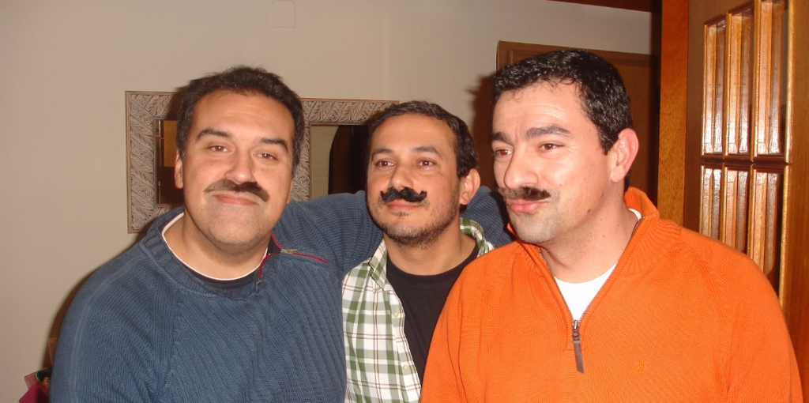Fernando Castro, Henrique Varela & Joaquim Farias
Dona Maria
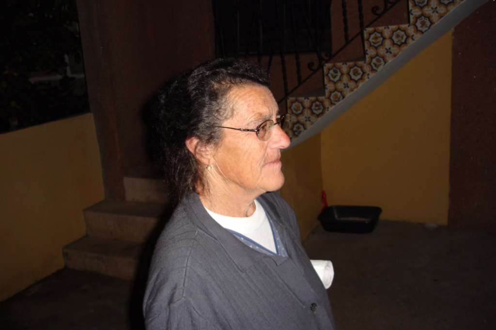As nossas tradições
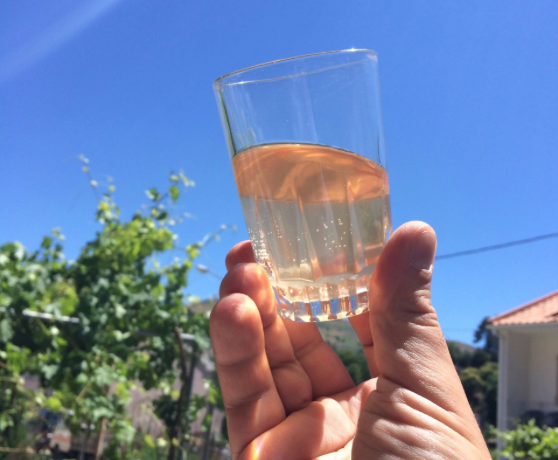
O produto 2015 - O início de tudo
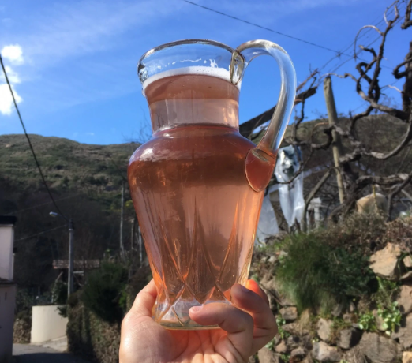
A melhor colheita 2016 - Um ano excecional para a nossa
produção
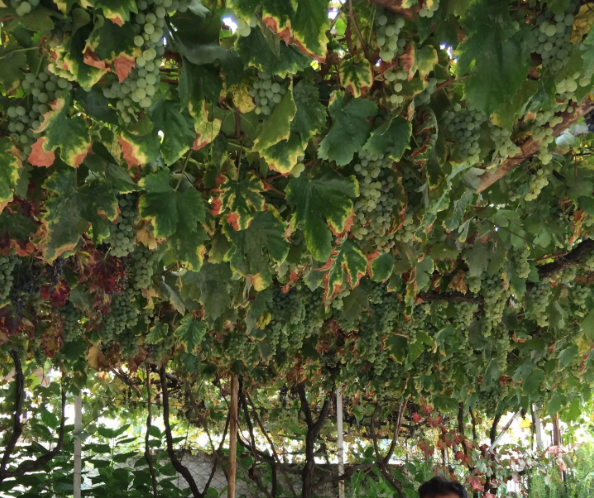
A vinha - Onde a magia começa
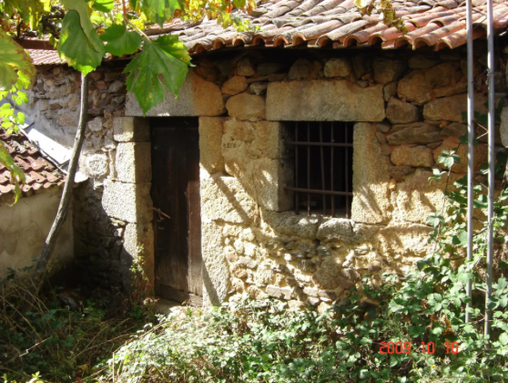
Lugares - Ramada do Quintal
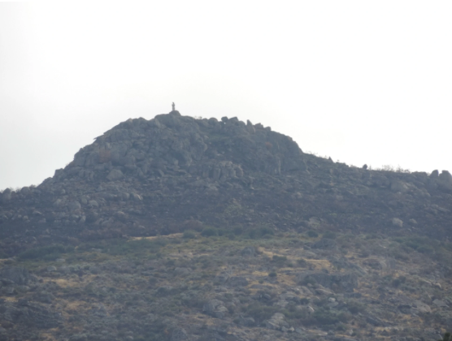
Vista - Monte Santa Bárbara
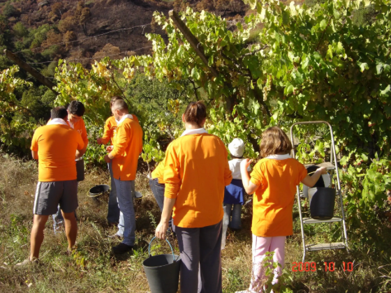
Vindimadores - Grande Equipa
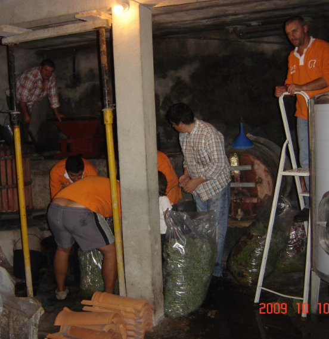
Trabalho "árduo"
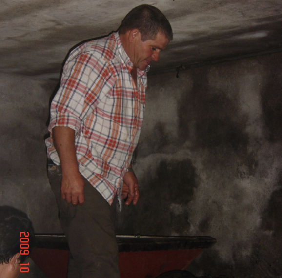
Confrade de Honra - O Tio Chico
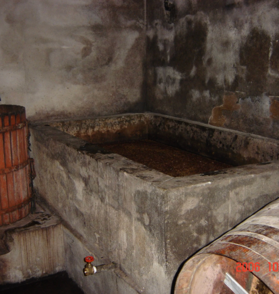
Lagar - Onde tudo acontece
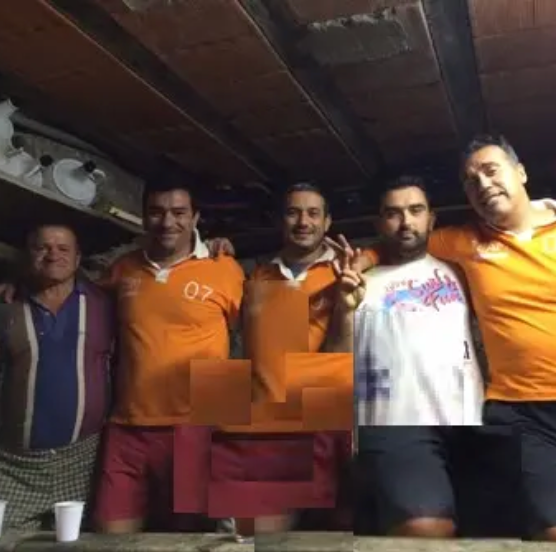
Pisa - A espremer
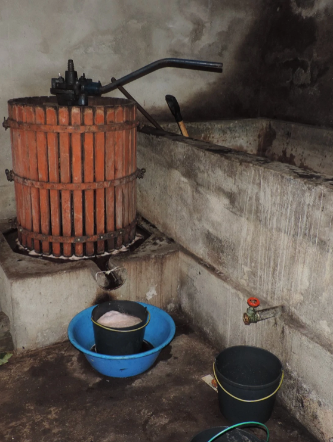
Prensa - Até à última gota
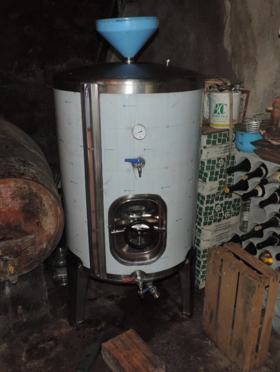
Cuba - Para limpar com o "preparado"
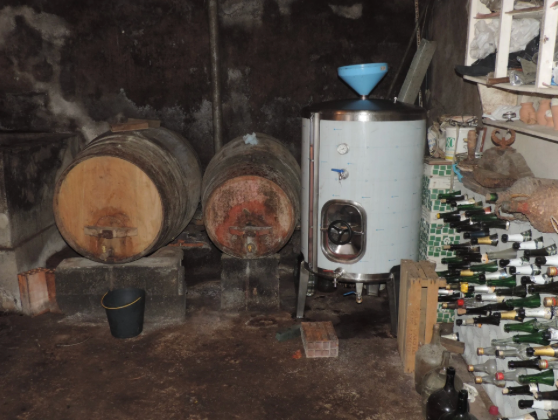
Adega
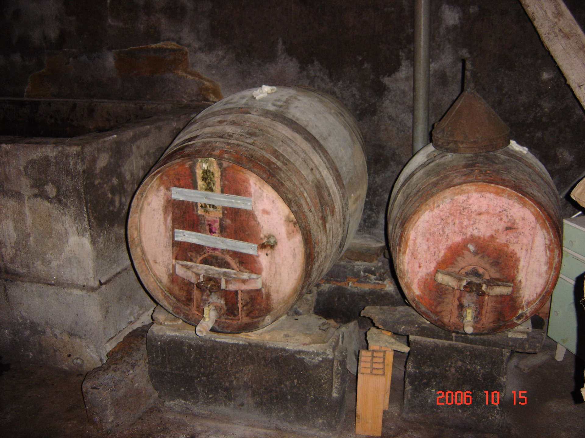
Barricas - Centros de estágio
 Barricas - Centros de estágio
Barricas - Centros de estágio
 O Alambique
O Alambique
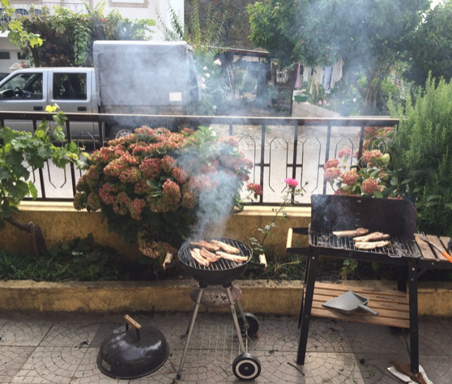
Preparação do almoço, com a espetacular carrinha de fundo
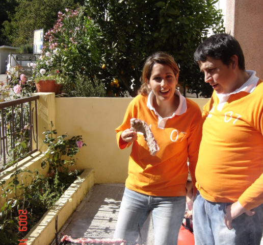
Tradicional Grelhada
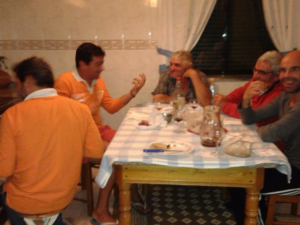
Os Tios